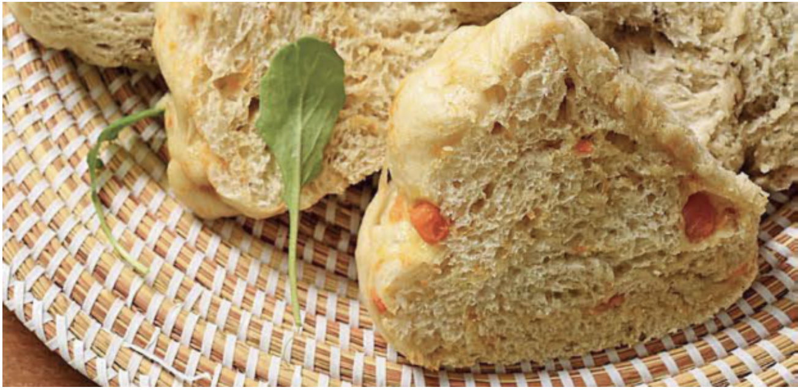

Steamed dumpling

A fluffy mildy sweat dumpling.
Ingredients:
- 480 g flour — cake wheat
- 15 ml salts
- 15 ml sugar
- 10 g Superbake Instant Yeas
- 375 ml water — lukewarm
- 1 eggs
Steps:
- Mix together cake wheat flour, salt, sugar and instant yeast. Make a hole in the middle and pour in lukewarm water, beaten egg and oil.
- Mix together and knead for at least 10 minutes to form a soft pliable dough. Cover dough with shrink wrap and allow to rise to double its size. Knock dough down by kneading again. Divide it into 4 equal parts. Add kernel corn to one part, curried mixed vegetables to the next and chopped mushrooms to the third portion. Leave the fourth plain.
- Place the 4 portions of dough next to each other in a greased heatproof dish. Pour water in a large saucepan to come up to one-third of the bowl and bring to a boil. Immerse bowl with dough into water. Cover saucepan tightly and steam for 60 minutes over medium heat. Replenish the water if it goes dry.
- Test by inserting a skewer into the dumpling. If it comes out clean, the dumpling is cooked. Serve with soup, meat or chicken stew.the dumpling. If it comes out clean, the dumpling is cooked. Serve with soup, meat or chicken stew.